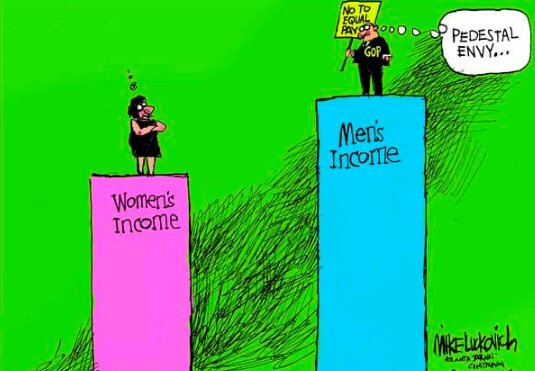

Proposed Solutions

Filler Solution Image 1

Filler Solution Image 2
The solution is to make politics fairer by giving more people a real chance to participate and for their voices and ideas to be heard. That means improving civic education, making voting and engagement easier, and reducing the overwhelming influence of money and powerful groups so political power is not concentrated in just a few hands.
A meaningful response to political inequality has to strengthen democratic participation, expand access to political power, and reduce the barriers that keep ordinary citizens from influencing public decisions. The goal of the solution is not only to raise awareness, but also to build a more responsive political system in which participation is easier, representation is on a broader scale, and political influence is disconnected from economic inequalities (Busemeyer et al., 2024; Schlozman, Brady, & Verba, 2012). To accomplish this, the solution should focus on three connected priorities. The first being expanding civic education, followed by increasing participation amongst underrepresented groups, and finally, reducing structural advantages that allow wealthy or highly connected groups to essentially choose political outcomes (Bartels, 2008).
The rationale behind this solution is that political inequality doesn't come from one single cause, but rather that it is produced by a combination of unequal standings and overall unequal access to a political voice (Pontusson & Rueda, 2010). For that reason, the response must also be multi-layered. Civic education helps citizens understand how government works and why participation matters. Voting access reforms and participation campaigns shorten the barriers that have held people back from engaging in politics. Rules, campaigning, financial reforms, and stronger public accountability will limit the effect of capital over ordinary voices (Bartels, 2008; Schlozman et al., 2012). Together, these strategies target both the symptoms and the structure of the problem, which makes the solution more durable rather than a single reform.
Research strongly supports this approach. Studies on political inequality show that unequal participation and representation are persistent features in modern democracies, more and more when it comes to economic inequality, which is generally high, and political institutions respond more to affluent citizens than to the normal voters. Political voice writings also show that people with fewer resources are less likely to participate and more likely to feel excluded from politics, which means that improving just the access is not enough unless the citizens feel informed and empowered to act on lawmaking (Schlozman et al., 2012).
The proposal is also rhetorically important because it places political inequality as a problem that can be solved through collective democratic action rather than just passive acceptance. It avoids blame and instead talks about responsibility, fairness, and the long-term health of societies. A stronger democracy requires not only equal rights on paper, but also equal opportunity to use those rights in practice (Cagé, 2024; Mian et al., 2024).